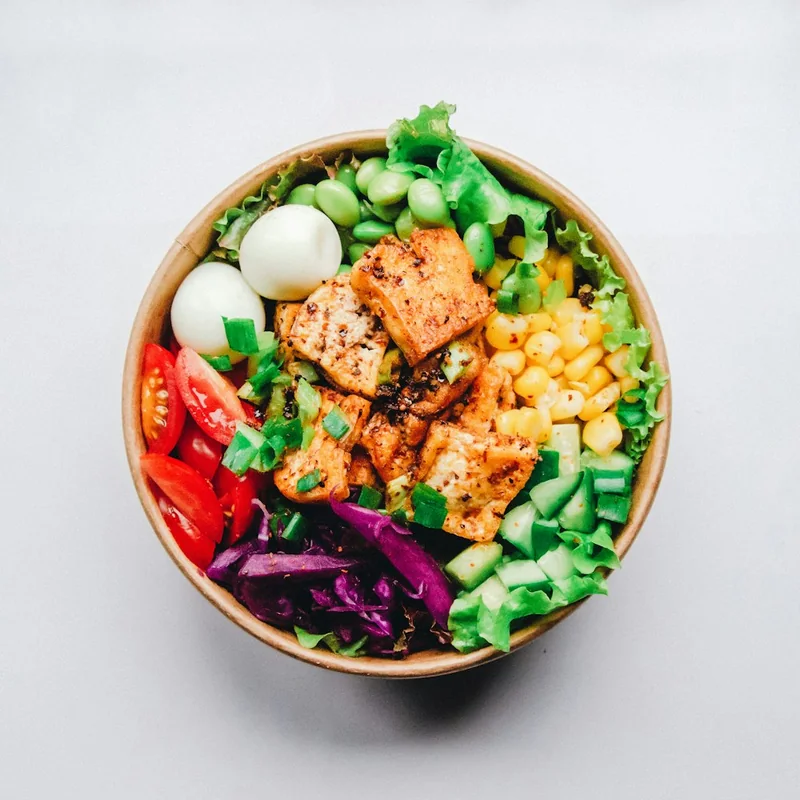
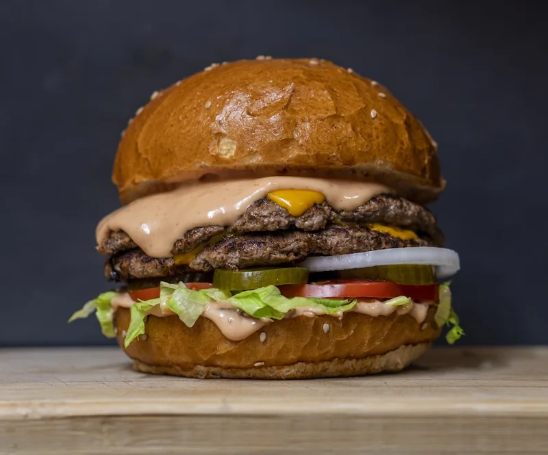

Structural explorations
Four unresolved decisions, explored as real alternatives with tradeoffs — not post-hoc validation of the selected directions. Each ends with a provisional recommendation and how to test it. Mock content is illustrative.
AFeed information density
How much metadata belongs on the feed? The founding bet is "photos decide" — but zero text may force detail-view round-trips just to check a price.
A1 · Photo-only selected · in v3.1 prototype




- Scan: fastest — pure appetite response
- Impact: maximal; the brand thesis
- Decisions: price/distance need a tap
- A11y: weakest — image-only targets need strong alt labels
A2 · Minimal overlay
- Scan: near-parity; chips read peripherally
- Impact: slight clutter at density
- Decisions: answers the #1 question (price) in-feed
- A11y: real text on every tile
A3 · Metadata beneath
- Scan: slowest — eye alternates photo/text
- Impact: becomes "a list with big thumbnails" (Yelp gravity)
- Decisions: most complete
- A11y: best; standard pattern
A4 · Reveal on hold
$17 · 1.2 mi · 93%
- Scan: clean until invoked
- Impact: preserved
- Decisions: gated behind an undiscoverable gesture
- A11y: worst — long-press is invisible & hard for motor-impaired users
Keep A1 in the feed, use A2's chips only for mode context (trending ↑, distance in Nearest sort, "your taste") — info appears when a sort makes it meaningful, price stays one tap away. Search results already use full labels (searchers compare; browsers graze). Test: task 1–2 in the usability round — if ≥3/5 participants open details *only* to check price, promote A2.
BOnboarding model
When does personalization setup happen — and where does safety-critical setup (allergies) go in each model?
B1 · Calibrate first, skippable selected · in v3.1 prototype
- Safety set up before first browse — no allergen ever shown
- Cost: 2 screens before food; skip mitigates
- Cold-start feed is decent immediately
B2 · Browse first
- Zero friction; TikTok-style
- Safety hole: allergic user browses unfiltered until they volunteer info
- Inference is opaque — harder to trust or correct
B3 · Progressive prompt
- Safety early and almost no friction
- Calibration arrives when value is provable
- Cost: feed untuned for first session; prompt fatigue risk
Ship B1 now; B3 is the strongest challenger. The non-negotiable across all models: allergy capture must precede unrestricted browsing. Test: instrument skip-rate and time-to-first-save; if skip > 40% or drop-off clusters on the taste screen, run B3 as an A/B.
CTrust signal
One number replaces star ratings. How should it present to be believed — and what shows when there's not enough data?
C1 · Percentage alone
- Clean, but unanchored — 94% of what?
- Reads like marketing; invites skepticism
C2 · % + sample + method selected · in v3.1 prototype
- Sample size does the credibility work
- Expandable methodology = trust for skeptics, quiet for grazers
C3 · Plain language
- Warm, unambiguous
- Loses precision; every dish sounds the same above ~80%
C4 · Cold start selected · in v3.1 prototype
- Admitting "not enough data" is the trust play
- Protects the metric from small-sample noise
C2 + C4 as a system — precise number with visible sample and method when signal exists; honest abstention when it doesn't. Test: task 5 ("explain 90% would order again") — success is participants correctly describing repeat orders, not satisfaction. If ≤2/5 get it, trial C3's wording as the headline with C2 as detail.
DAction hierarchy
Dish detail ends in three actions. Which is primary — and should that depend on context?
D1 · Order primary selected · in v3.1 prototype
- Matches "decide with your eyes → act now"
- But Morsel exits to another app at its peak moment
- Wrong for sit-down rooms & closed kitchens
D2 · Directions primary
- Honors the urban walk-there reality (most seeds are <20 min away)
- Undersells the monetizable action
- Wrong at 11pm in the rain
D3 · Context-dependent
- Delivery spot → Order · closed → Directions + disabled state · no carriers → Directions/Pickup
- Always one honest primary; never a dead end
- Cost: hierarchy is less predictable across dishes
D3 is the destination; v3 ships its first two rules (sold-out and closed states already disable ordering; no-carrier sheets pivot to pickup). Full swap of the primary slot needs data. Test: tasks 1 & 10 — watch for taps on disabled/absent actions and where users expect "go there" to live.
| Method note | All comparisons rendered in the selected Toast visual system so differences are structural, not cosmetic. Mock data labeled illustrative. Recommendations are provisional pending the 5-session test round (see Testing Plan). |